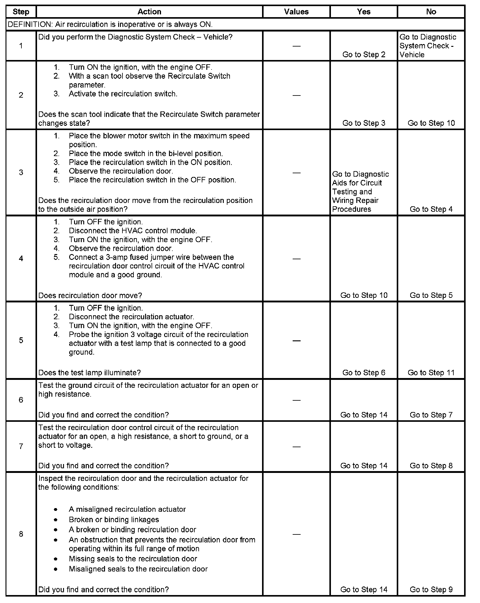
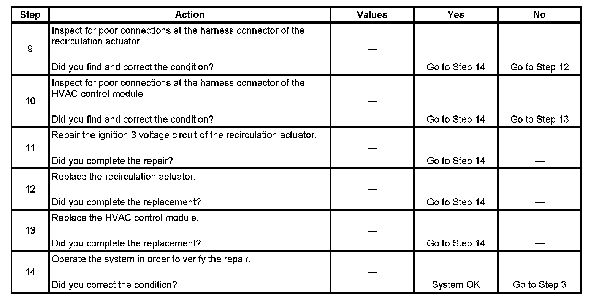

Operation CHARM
: Car repair manuals for everyone.
Home
>>
Cadillac
>>
2007
>>
Escalade ESV AWD V8-6.2L
>>
Repair and Diagnosis
>>
Heating and Air Conditioning
>>
Testing and Inspection
>>
Symptom Related Diagnostic Procedures
>>
Diagnosis By Symptom - HVAC System - Automatic
>>
Air Recirculation Malfunction
Air Recirculation Malfunction
Step 1 - Step 8:

Step 9 - Step 14:
